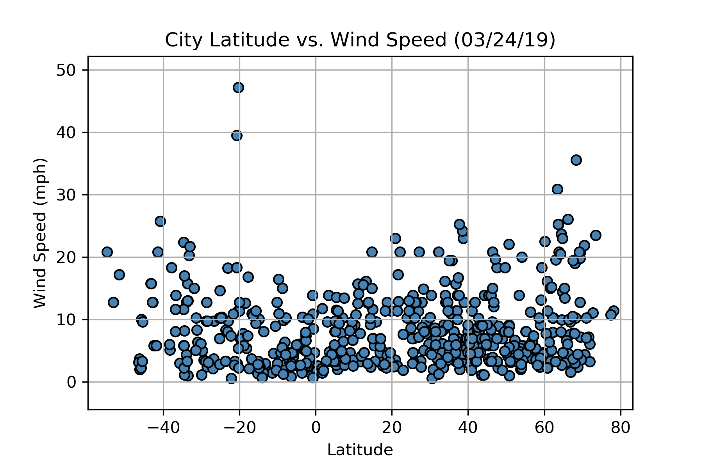

To analyze Latitude vs. Wind Speed, polynomial regression (/) are plotted with both low (deg=5, red dashed line) and high degrees (deg=25, magenta solid line). As seen on the above figure, the low deg line is pretty flat. Althouth the high deg line does return some peaks and grooves, the two lines do not share any significant trend in common. Therefore, it is hard to say city latitude in this dataset has any impact on wind speed.